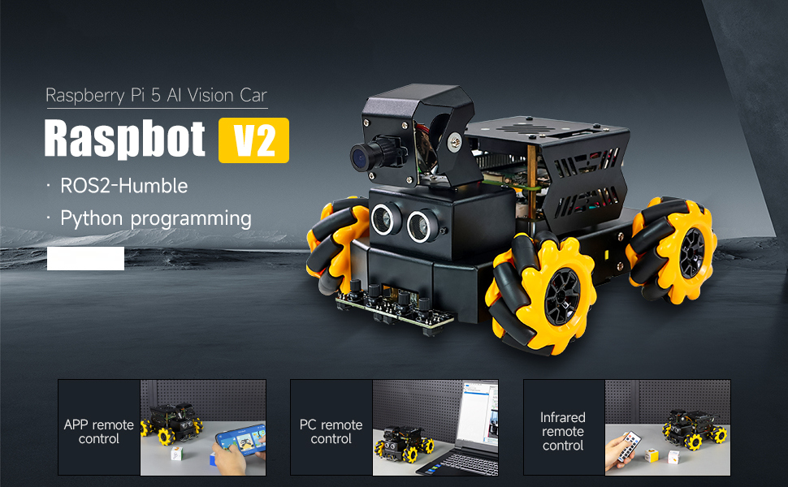
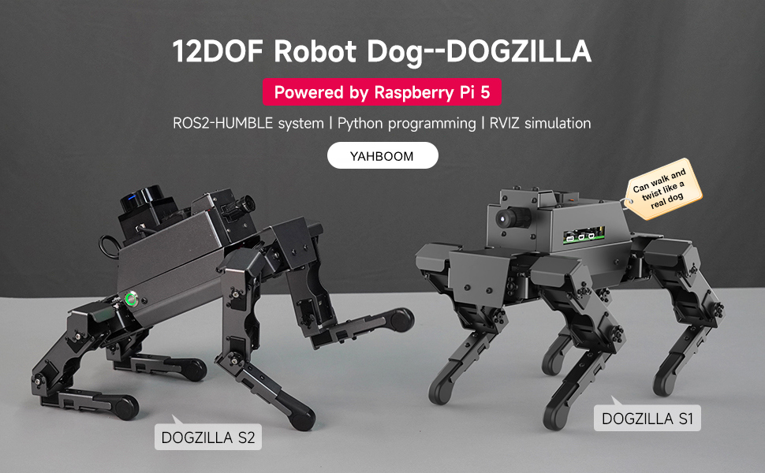

Select a Repository of your choice!
DOFBOT-JetsonNANO Repository
The DOFBOT robotic arm utilizes the NVIDIA Jetson Nano platform. Students in Robotics 1 use this platform to explore fundamental robotics concepts through Python programming. In addition to the powerful Jetson platform, the arms are also equipped with a two finger gripper and RGB camera.

ROSMASTER X3 Repository
The Rosmaster X3 is an advanced mobile robot with ROS (Robot Operating System). This repository contains setup instructions, control code, and sensor integration examples for using the Rosmaster X3 with various programming environments. Students can learn SLAM (Simultaneous Localization and Mapping), exploring autonomous navigation, and working with sensors like LIDAR and cameras.

DOFBOT-JetsonNANO Repository
The Raspbot V2 is a beginner-friendly robot car that runs on the Raspberry Pi. This repository includes code and documentation for setting up the Raspbot, controlling its movement, and incorporating basic computer vision features. This repo teaches students motor control, obstacle avoidance, and basic computer vision using Python.
DOFBOT-JetsonNANO Repository
Dogzilla is a four-legged robot designed to explore legged locomotion and robotic control. This repository provides code to operate Dogzilla's servos, balance control, and remote operation. It's a great tool for understanding inverse kinematics, walking gait algorithms, and the fundamentals of dynamic stability in four-legged robots.
